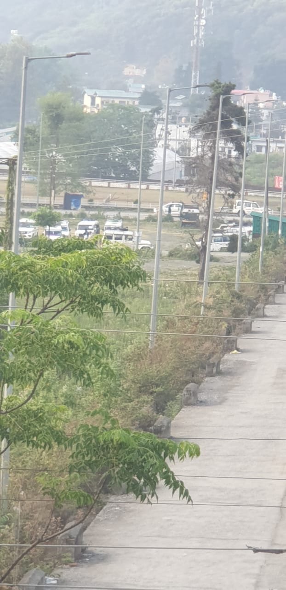
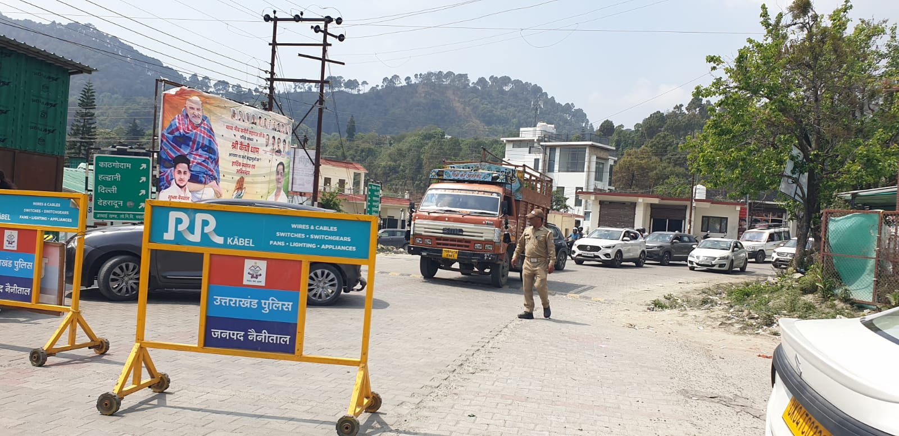
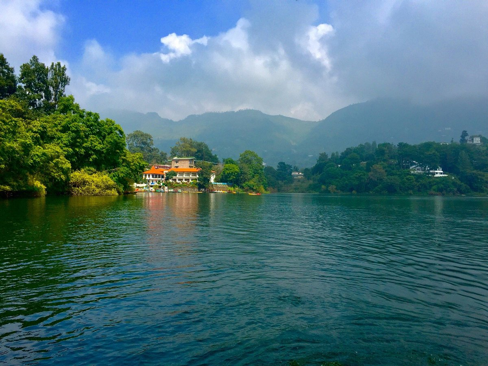
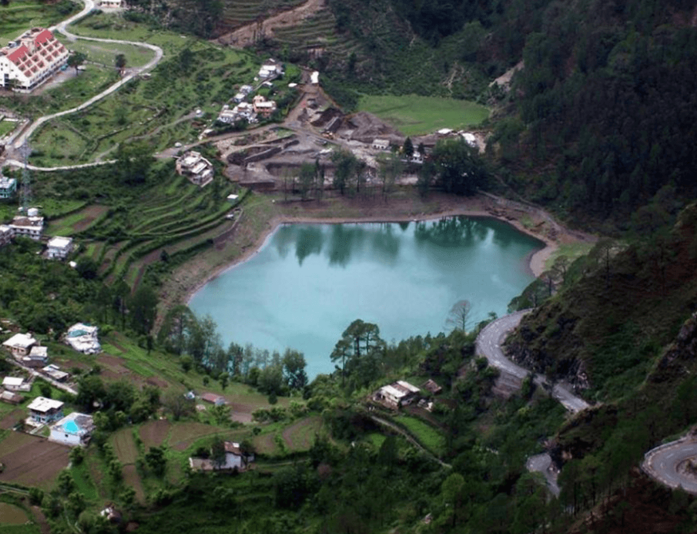
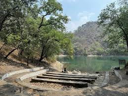
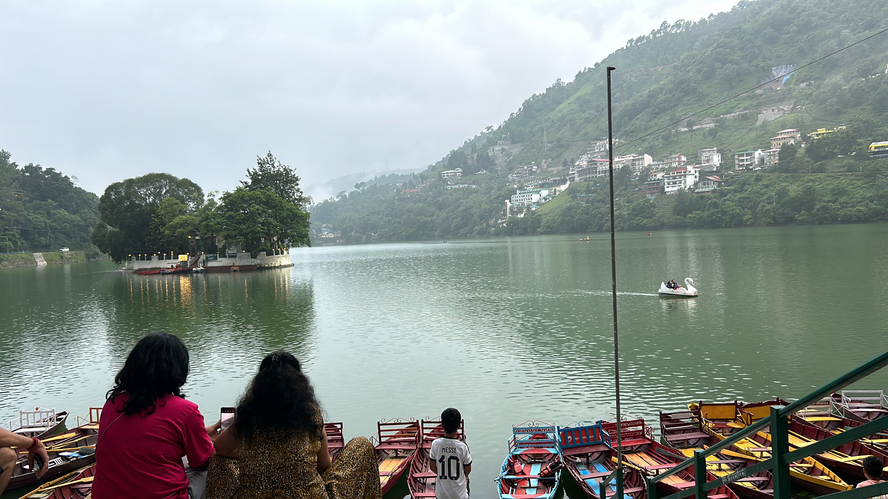

Our Location Advantage
150 Metres from the Kainchi Dham Shuttle Parking
You don't need to worry about traffic or parking. We're right next to where every pilgrim must stop.
Our Location Advantage
You don't need to worry about traffic or parking. We're right next to where every pilgrim must stop.
Why This Location Matters
The Uttarakhand Government has made the shuttle service mandatory for all vehicles with non-Uttarakhand number plates visiting Kainchi Dham Mandir.
All outside vehicles must park at the designated shuttle point in Bhimtal and board the government shuttle to reach the temple.
Ashirwad Homestay is just 150 metres from this shuttle parking — making it the most convenient place to stay for Kainchi Dham pilgrims arriving from Delhi, Lucknow, Kanpur, or anywhere outside Uttarakhand.
No long walks. No searching for parking. No traffic stress. Check in, freshen up, and walk to the shuttle in 2 minutes.



Getting Here
Well connected by road from all major cities. The nearest railway station is Kathgodam — and Haldwani's bus stand and taxi stand are just minutes away. Shared cabs, taxis, and buses to Bhimtal run regularly from all three.
Nearby
Use Ashirwad Homestay as your base — explore lakes, temples, and hill stations without rushing.
Mandatory boarding point for non-UK vehicles
Largest lake in Bhimtal, boating available
Famous Neem Karoli Baba ashram, millions visit yearly
Nine-cornered lake — deepest in the region
Cluster of 7 forest lakes — serene and less crowded
Scenic, quiet lake with mountain views
Famous hill station, Naini Lake, Mall Road
The 7 Taals Trail
This region of Kumaon is home to seven beautiful lakes — from walking distance to an easy day trip. Ashirwad Homestay puts you at the perfect starting point for all of them.

The largest lake in Bhimtal town — boating, an island cafe, and serene walks.
Walking distance
Nine-cornered lake — deepest in the region, great for kayaking and birdwatching.
5 KM away
A cluster of 7 interconnected forest lakes — the most peaceful of the 7 Taals.
10 KM away
Scenic, quiet lake with mountain reflections — far fewer crowds than Nainital.
12 KM away
Small, peaceful lake — a favourite for birdwatchers and nature walkers.
~15 KM away
The upper lake of Nainital — iconic, surrounded by hills and the Mall Road.
~20 KM away
The most famous hill station in Uttarakhand — Naini Lake, boating, and views.
22 KM awayStay 3 nights at Ashirwad Homestay and cover all 7 lakes comfortably. Day 1: Kainchi Dham + Bhimtal. Day 2: Sattal + Naukuchiatal. Day 3: Khurpatal + Nainital.
Plan Your Lake TripFind Us